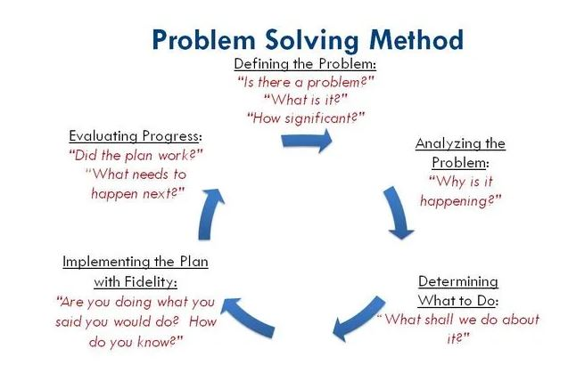

Solving problems means making choices. Typically, effective problem-solving skills result in “happier, more confident, and more independent” individuals. When children tackle problems on their own, or in a group, they become resilient.They learn to look at challenges from a fresh perspective.

problem solving doesn’t mean going away and coming up with an answer immediately. In fact, this isn’t good problem solving at all, because you’ll be running with the first solution that comes into your mind, which often isn’t the best.
problem solving more as a process with several steps involved that will help you reach the best outcome. Those steps are:
Define the problem
Problem solver will take the thoughts of everyone involved into account, but different people might have different ideas on what the root cause of the issue really is. It’s up to you to actively listen to everyone without bringing any of your own preconceived notions to the conversation. Learning to differentiate facts from opinion is an essential part of this process.
List all the possible solutionsOnce you’ve identified what the real issue is, it’s time to think of solutions. Brainstorming as many solutions as possible will help you arrive at the best answer because you’ll be considering all potential options and scenarios.
Evaluate the optionsEach option will have pros and cons, and it’s important you list all of these, as well as how each solution could impact key stakeholders. Once you’ve narrowed down your options to three or four, it’s often a good idea to go to other employees for feedback just in case you’ve missed something.
Select the best solutionOnly now should you choose which solution you’re going to go with. What you decide should be whatever solves the problem most effectively while also taking the interests of everyone involved into account.
Create an implementation planCreate an implementation plan on how you will put your solution into practice. One problem solving technique that many use here is to introduce a testing and feedback phase just to make sure the option you’ve selected really is the most viable.
Communicate your solutionThere’s one last step to consider as part of the problem solving methodology, and that’s communicating your solution